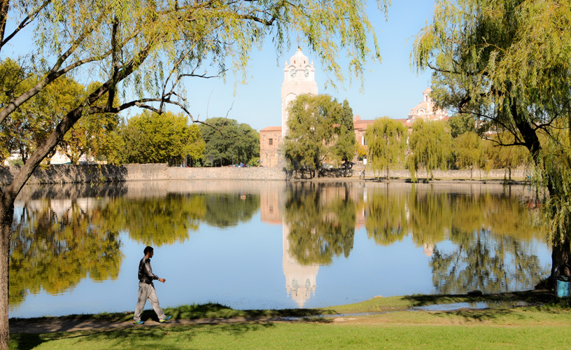
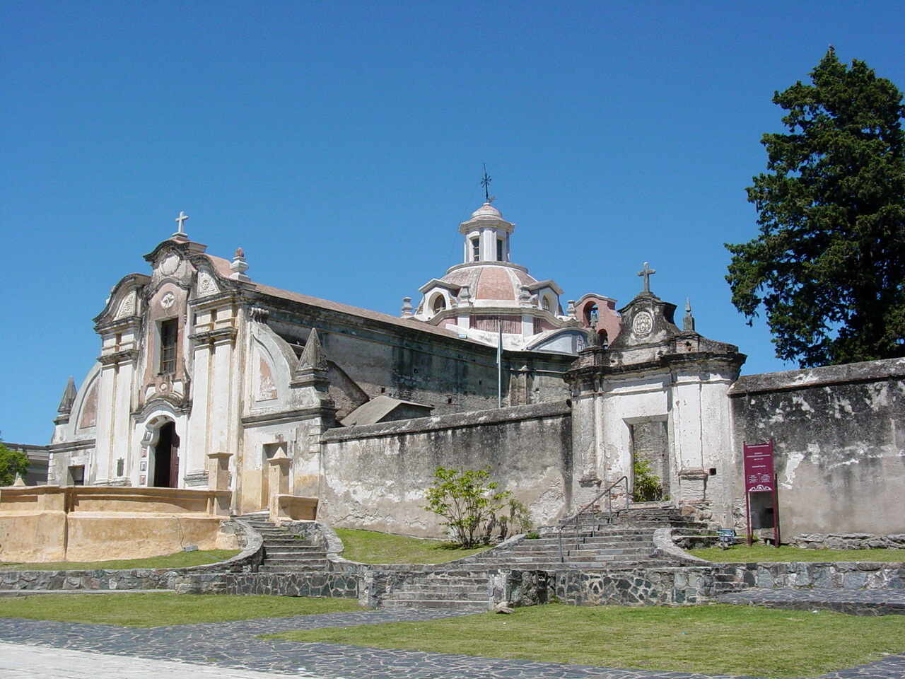

Tajamar
Es el dique artificial más antiguo de la provincia de Córdoba y fue construido por los Jesuitas en el año 1659. Su caudal de agua permitía el riego de los sembradíos, además del funcionamiento de dos molinos harineros y un batán. Hoy en día es un lugar de encuentro familiar y esparcimiento
Reloj Público
Fue construido en 1938 con motivo de la celebración del 350° aniversario del otorgamiento de la Merced de las tierras y representa el paso del tiempo y las etapas históricas de la ciudad. La base del monumento de piedra tosca y adornos simbólicos representa las raíces indígenas de Paravachasca, nombre con que los comechingones denominaron a la región y que significa en lengua aborigen lluvia a destiempo o vegetación enmarañada. En el cuerpo del edificio se evoca al período hispánico mediante arcos, balcones y revestimiento rústico. En sus aristas se observan las esculturas del indio, el conquistador, el misionero y el gaucho, obra ejecutada por Troiano Troiani en homenaje a los que forjaron nuestra historia. La Virgen de la Merced, patrona de la ciudad, ha sido colocada en una hornacina en el frente del monumento. La torre culmina con el reloj eléctrico con campana de bronce que suena cada hora y a cada media hora, cuyas cuatro esferas se orientan hacia los puntos cardinales. La construcción de la Torre Reloj testimonia la búsqueda de la tradición local y la aspiración de la vanguardia progresista.

Museo Estancia Jesuítica
El Museo Estancia Jesuítica de Alta Gracia y Casa del Virrey Liniers, dependiente de la Secretaría de Cultura de la Nación tiene su sede en la antigua residencia jesuítica del siglo xvii, que integraba el casco de la Estancia de Alta Gracia. En 1810 fue propiedad de Don Santiago de Liniers. La importancia del museo radica fundamentalmente en su valor arquitectónico que se preserva fiel a la estructura original. En la actualidad el Museo cuenta con diecisiete salas de exposición permanente, las que han sido ambientadas de acuerdo a los modos de vida de cordobeses y especialmente de los serranos durante los siglos XVII, XVIII y XIX. Cabe aclarar que esta Residencia fue declarada Monumento Histórico Nacional en 1941, y que expropiada en 1968, se iniciaron los trabajos de restauración en 1971. El 26 de agosto de 1977 se inauguró oficialmente. En 1986, por su intensa labor cultural y educativa recibió de la Secretaría de Cultura de la Nación el Primer Premio en el Concurso “El Museo Más Activo del País” El 2 de diciembre del año 2000 fue declarada, junto a la Manzana Jesuítica y a las otras estancias jesuíticas de la Provincia de Córdoba, Patrimonio de la Humanidad por UNESCO.
Museo Casa del Che
Este museo abrió sus puertas el día 14 de julio de 2001. Villa Nydia es el nombre de la casa de estilo inglés en la que vivió la familia Guevara de la Serna. Desde el momento de su apertura, los habitantes exhiben fotografías, cartas, documentos y objetos simbólicos de la infancia y adolescencia de Ernesto Che Guevara. Aquí se perpetúa un sentido homenaje, al niño, al joven, al amigo, a la figura universal: “El Che”. En el museo, se realizan espectáculos de luz y sonido.